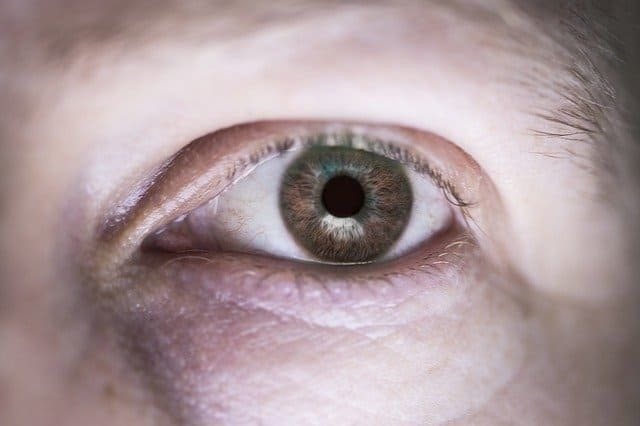

眼瞼下垂の鍼灸
上まぶたが垂れ下がり視界が狭くなる状態です。医療機関での診断を基本とし、攅竹・絲竹空・魚腰などのツボで筋緊張を和らげます。
まず知っておきたい要点と改善の流れ
眼瞼下垂は、上まぶたを持ち上げる機能が低下し瞳孔が覆われて見えにくくなる状態です。加齢やハードコンタクトレンズの長期使用、白内障手術などで挙筋腱膜やミュラー筋が緩む「腱膜性眼瞼下垂」、加齢による皮膚のたるみの「上眼瞼皮膚弛緩症」、生まれつき眼瞼挙筋の働きが弱い「先天性眼瞼下垂」が代表的です。なお、急に発症した場合は脳梗塞や脳動脈瘤、重症筋無力症などが隠れていることもあるため、まず医療機関での鑑別が重要です。（公式解説）
このようなお悩みはありませんか？
- ✓上まぶたが重く下がってきて、視界の上側が見えにくい
- ✓物を見るために無意識に眉を上げたり顎を上げたりしている
- ✓おでこのしわが増え、慢性的な頭痛や首肩こりがつらい
- ✓ハードコンタクトを長年使っている、または加齢でまぶたがたるんだ
当院の施術アプローチ・改善の流れ
なぜ鍼灸で改善へ向かうのか？（作用機序の図解）
眼瞼下垂に対する鍼灸は、後頸部〜眼周囲の微小循環と毛様体筋・自律神経調整機序を通じて、お体本来の回復力を引き出します。

眼球周囲の危険な深刺しを避け、風池・天柱・合谷・太衝など安全な経穴へ繊細に施術します。
PC・スマホ作業や緊張で固まった首深層筋と眼輪筋周囲の血流を促し、重だるさを軽減します。
交感神経優位による目の乾き・ピント調節疲労を鎮め、涙液分泌とリラックス反応を助けます。
眼科の点眼・定期検査を最優先としつつ、日々の眼精疲労や頭痛・肩こりの連鎖を整えます。
院長YouTube解説・関連動画
眼瞼下垂は、瞼を持ち上げることが難しくなる病気

眼瞼下垂は、瞼を持ち上げることが難しくなる疾患です。眼瞼下垂では、目が見えにくくなります。
目が見えにくくなる病気は多くあります。その場合、基本的には眼科にいきます。しかし、もし眼科で眼球に問題がないと判断された場合、瞼のせいで見えにくくなっている可能性があるのです。
眼瞼下垂の場合、形成外科で手術をすることで症状が改善する可能性があります。
眼瞼は、瞼のことです。垂れ下がることを下垂と言います。眼瞼下垂は瞼が垂れ下がり上げにくくなっている状態のことなのです。
日常で瞼を開けたり閉じたりする時、あまり意識することはありません。しかし、眼瞼下垂が起こると、通常意識していない瞼の開け閉めが難しくなるのです。
物を見る働きをしている瞳孔が、上げにくくなった上まぶたで隠されてしまうと、目が見えにくくなるのです。
眼瞼下垂では、物が見えにくくなる
眼瞼下垂では、物が見えにくくなります。これは、瞼が下がるため、黒目の一部もしくは大部分が覆われることによって起こる症状です。
者が見えにくいため、見ようとして顎が上がることで肩凝りや頭痛につながることもあります。
眼瞼下垂の症状は、片側だけに現れることもあれば両側に現れることもあります。先天性の場合は、約8割が片側のみに症状が現れると言われています。
後天性の場合、一般的に数年かけて少しずつ症状が現れます。しかし、脳梗塞などが原因の場合、急に症状が現れることもあります。
まぶたの下垂：眼瞼下垂の最も一般的な症状は、もちろんまぶたが下がることです。この症状は、一部または全体のまぶたが影響を受けることがあります。また、一方の目だけが影響を受ける一側性眼瞼下垂と、両方の目が影響を受ける両側性眼瞼下垂があります。重度の眼瞼下垂では、まぶたが瞳を覆ってしまい、視界が制限されることがあります。
瞼の疲れや重さ：眼瞼下垂では、まぶたの重さや疲れを感じることが多いです。これは、まぶたを開けるための筋肉が過度に働く必要があるためです。
頭痛や眉間の痛み：眼瞼下垂により、視界が制限されると無意識に眉を上げることで視界を確保しようとします。これが長期間続くと、筋肉に過度な負荷がかかり、頭痛や眉間の痛みを引き起こすことがあります。
涙目：一部では、まぶたが正常に動かないために涙が適切に排出されず、涙目になることがあります。
視力低下：まぶたが視線を遮ることで視力が低下することがあります。これは特に、まぶたが瞳を部分的に覆ってしまう重度の眼瞼下垂で見られます。
斜視または二重視：眼瞼下垂は、視線の調整を困難にすることがあり、これが斜視や二重視を引き起こすことがあります。
幼児における発育遅延：幼児期に眼瞼下垂が発生した場合、視覚的な発育に影響を与える可能性があります。子どもが物を見るために頭を後ろに傾ける必要がある場合や、まぶたが瞳を覆い隠してしまうほど重度の眼瞼下垂である場合、視覚刺激が不足してしまい、視力や視覚認知の発達が遅れることがあります。最も懸念されるのは弱視の発症で、これは視力が正常に発達しない状態を指します。
コサージュ症状：これは、眼瞼下垂の人がより良く見るために顔を上げ、頭を後ろに傾けるという特有の姿勢をとることを指します。これは視力を改善しようとする自然な反応ですが、長期間続くと首や肩に痛みを引き起こすことがあります。
眼瞼下垂の改善方法は、手術です。手術は日帰りで行うこともできますが、日常生活に支障があることもあるため、短期入院で行うことが多いです。
眼瞼下垂が先天性の場合は、瞼の筋機能を回復する手術を行います。ただし、重症ではない場合は、急いで手術する必要はありません。
人によっては、経過を観察して自然に改善するまで待つこともあります。なかなか改善しない場合や重症の場合は、手術で改善を行います。
眼瞼下垂が後天性の場合は、瞼を開きやすくするための手術を行います。症状が重い場合は、おでこの筋肉を使って瞼を持ち上げる手術などで改善を行います。
保存的改善：症状が軽度で生活に大きな支障をきたさない場合や、他の状況が手術を許さない場合、まずは保存的を試みることがあります。これには、筋肉を強化するための目のエクササイズや、まぶたを持ち上げるための特別なテープや装置を使用する方法があります。
薬：特定の状況下では、薬が有効な場合があります。例えば、ミオスチーニア・グラビスという自己免疫に関する病気が眼瞼下垂の原因となっている場合、抗コリンエステラーゼ薬が症状の改善に寄与します。
手術：眼瞼下垂の症状が重度である、または保存する方法や薬による改善が見られない場合、まぶたを持ち上げる筋肉を補強または修正する手術が選択されることがあります。手術の方法は状態や眼瞼下垂の程度によりますが、眼瞼挙筋短縮術やフロントリス法などがよく行われます。
Botox注射：一部では、ボトックス注射が有効な場合があります。これは神経に作用し、筋肉の緊張を一時的に緩和することで、まぶたの位置を改善します。
これらの方法の選択は、眼瞼下垂の程度、健康状態、生活状況など、多くの要素に基づいて行われます。そのため、改善方法の選択や改善に向けた準備には、専門医との詳細な話し合いが必要となります。
物理的な方法：特定の眼瞼下垂に対して、物理的な方法が有効な場合もあります。眼球周囲の筋肉を訓練することで、まぶたの動きが改善することが期待できます。ただし、これは一時的な解決策であり、症状の本質的な改善には至らない場合もあります。
神経刺激：ある種の神経の病気が眼瞼下垂の原因となっている場合、神経刺激が選択されることがあります。これは、特定の神経に電気的刺激を与えることで、神経機能を改善し、筋肉の動きを回復する療法です。
生活習慣の改善：眼瞼下垂がストレスや過度の疲労によって引き起こされている場合、生活習慣の見直しが求められます。十分な休息、バランスの良い食事、適度な運動などは、全般的な健康状態を向上させ、眼瞼下垂の症状を軽減する可能性があります。
心理的なサポート：重度の眼瞼下垂は、視覚障害だけでなく、自己意識や自尊心にも影響を与える可能性があります。そのため、心理的なサポートやカウンセリングが重要な改善の一部となる場合もあります。
眼瞼下垂の手術を行った後は、ほとんどの場合内出血や腫れが起きます。個人差はありますが、腫れが強い場合は前を見るのが難しいくらい晴れることもあります。
腫れや内出血は約1ヶ月ほどで改善します。一般的には、約3週間である程度改善しますが、数ヶ月腫れが続く場合もあります。
手術をする前より眼球が露出している面積が広くなるため、ドライアイが起きることがあります。特に手術をする前からドライアイの人が注意が必要です。
手術をした後はできるだけ安静にし、６〜10日後に抜糸を行います。抜糸をした後は化粧をすることもできるようになります。手術の後、半年間は後戻りする可能性もあるため、数ヶ月ごとに病院に行くことをお勧めします。
ツボの場所と押し方
攅竹は、左右の眉頭の内側のくぼんでいる場所にあります。
押す時は人差し指で真上から垂直に押します。力を入れ過ぎるとしわの原因になるため人差し指で軽く叩くくらいの刺激にしましょう。
絲竹空は眉毛を眉尻に向かってたどっていき、骨の外側にあるくぼみにあります。
押す時は親指を使って押します。左右同時に押しましょう。目を閉じた状態で押すことが大事です。
魚腰は、眉の真ん中あたりのくぼんでいる場所にあります。
押す時は親指か人差し指を使って、優しく押しましょう。上に向かって押すことがポイントです。


眼のお悩みのツボ図解とセルフケア
実際の施術ではお一人おひとりの体質・症状に合わせて選穴しますが、眼科領域の補完ケア（ドライアイ・眼精疲労・視神経ケア研究）の臨床でよく用いられる代表的なツボの目安です。

📌 代表的なツボの詳細一覧表を開く（6穴） ▼
| ツボ名 | 位置の目安 | 主な狙い | セルフケアの注意点 |
|---|---|---|---|
| 睛明（せいめい） | 目頭と鼻の付け根の間のくぼみ | 眼精疲労・ドライアイ・眼周囲の血流促進 | 眼球は絶対に押さない（緑内障の方は圧迫厳禁） |
| 攢竹（さんちく） | 眉頭の内側端のくぼみ | 目の重だるさ・眼精疲労・前頭部の緊張緩和 | 骨縁を軽く支える程度にし眼球へ力を逃がさない |
| 太陽（たいよう） | 眉尻と目尻の中間からこめかみ側へ指1本後ろ | 眼精疲労に伴うこめかみ頭痛・眼輪筋緩和 | 血管・神経が集まるため円を描くように優しく |
| 四白（しはく） | 瞳孔の真下、目の下の骨縁から指1本分下 | ドライアイ・目の下の循環・眼輪筋疲労ケア | 眼窩下神経出口のため強圧禁止、軽圧で |
| 風池（ふうち） | 後頭部の生え際、耳後ろと首筋の間のくぼみ | 後頸部の筋緊張解除による眼血流・自律神経ケア | 首を反らしすぎず斜め上へゆっくり |
| 合谷（ごうこく） | 手の甲、親指と人差し指の骨が交わる手前 | 顔面・眼周囲の循環促進、頭痛緩和の遠隔穴 | 妊娠中は強い刺激を避ける |
国際査読論文の科学的エビデンス
国際的な医学データベース（PubMed・Cochrane等）で報告されている眼科領域の補完ケア（ドライアイ・眼精疲労・視神経ケア研究）領域の代表的な査読済み鍼灸研究をまとめています（標準治療との併用や研究上の限界を含めて正確に掲載）。
📚 査読論文データ・PubMed出典リンクを開く（4件） ▼
| 年・研究デザイン | 対象・規模 | 主な結果 | 限界・出典 |
|---|---|---|---|
| 2024年 メタ解析 | ドライアイ 16試験（n=1,383：人工涙液併用） | BUT（SMD 1.25, P<0.0001）、シルマー試験（SMD 1.55, P<0.0001）、角膜染色・総有効率（OR 4.09）が有意改善。 | 自覚症状OSDIは有意差なし（P=0.15）。人工涙液との併用評価。 Medicine (PMID: 38181299) |
| 2019年 二重盲検RCT | ドライアイ 49名（米国・6か月追跡） | 実鍼群はOSDIスコアが1週〜6か月まで有意改善（6か月p<0.01）、乾燥感・充血も有意軽減。 | 小規模・客観的涙液指標（TBUT等）は有意差なし。 Clin Ophthalmol (PMID: 31114151) |
| 2020年 Cochraneレビュー | 緑内障・高眼圧症 3 RCTs（n=137） | 一時的な眼圧低下の報告はあるが8週時点で差消失、視力は有意差なし。 | 全試験が高バイアス・確実性非常に低。点眼治療の代替不可。 Cochrane (PMID: 32032457) |
| 2025年 メタ解析 | 変性眼疾患 21研究（緑内障・黄斑変性等） | 総有効率はOR 3.52（p<0.00001）だが、統合視力（p=0.50）・眼圧（p=0.11）に有意差なし。 | 非ランダム化研究含む。眼科標準管理下での補完研究段階。 Complement Ther Med (PMID: 40850524) |
参考文献・出典
- 銀座そうぜん鍼灸院「眼瞼下垂の公式解説ページ」
- 2024年 メタ解析（ドライアイ 16試験（n=1,383：人工涙液併用））— Medicine (PMID: 38181299)
- 2019年 二重盲検RCT（ドライアイ 49名（米国・6か月追跡））— Clin Ophthalmol (PMID: 31114151)
- 2020年 Cochraneレビュー（緑内障・高眼圧症 3 RCTs（n=137））— Cochrane (PMID: 32032457)
- 2025年 メタ解析（変性眼疾患 21研究（緑内障・黄斑変性等））— Complement Ther Med (PMID: 40850524)
よくある質問（FAQ）
Q. 眼瞼下垂は鍼灸だけで手術せずに治りますか？▼
Q. 自宅で押すとよいツボはありますか？▼
あわせて読まれる関連疾患（眼のお悩み）
遺伝性に黄斑部の視機能が低下する指定難病の総称です。眼科専門医での管理を最優先に、安定期の眼精疲労や首肩こりをケアします。
頚交感神経路の障害で眼瞼下垂・縮瞳・発汗減少が生じる症候群です。重篤な基礎疾患の病院精査と治療が最優先となります。
網膜の中心である黄斑に丸い穴が開き中心視力が低下する病気です。早期の眼科手術を最優先に、術後安定期の疲労をケアします。
眼や頭部の外傷で瞳孔調節筋や神経が損傷し瞳孔が開いたままになる状態です。眼科治療最優先で安定期の疲労ケアを支えます。
胎生期の前眼部形成過程で角膜混濁などが生じる指定難病です。眼科治療を最優先に、安定期の眼精疲労ケアをサポートします。
網膜の後方で焦点が結ばれる屈折異常です。眼科での矯正を基本とし、太陽や和髎などのツボを活用した鍼灸で眼精疲労をケアします。
おひとりで悩まず、まずはご相談ください
銀座本院・川口・大宮・横浜・博多・田無の各院でご予約を承っております。